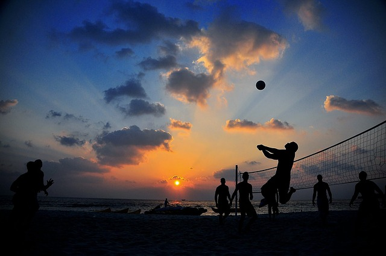
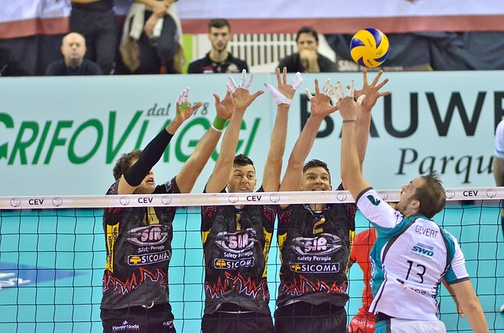

Sobre mim
Apresentação
Moro atualmente em Lavras, mas minha cidade natal é Oliveira, no estado de Minas Gerais. Sou estudante do curso de Ciência da Computação na Universidade Federal de Lavras(UFLA), meu estado civil é solteiro, meu esporte favorito é o voleibol, mas já pratiquei de todos os tipos de esporte, principalmente futsal e futebol.
Objetivos
Tenho como objetivo na Comp Júnior o aprendizado e o crescimento acadêmico, com toda a carga de conhecimento que uma empresa júnior pode propor para seus membros. A empresa júnior é um meio de mostrar como seria o mercado de atuação depois da universidade, de como seria a cobrança e todo o meio burocrático!
Formação acadêmica
Bom, como já disse, sou graduando no curso de Ciência da Computação pela Universidade Federal de Lavras(UFLA), estou atualmente no 4º período e estou como trainne na Comp Júnior!
Experiência
Tenho experiência em trabalhar com pessoas, já que trabalhei como assistente e algumas vezes como treinador de voleibol na minha cidade natal.
|  |  |